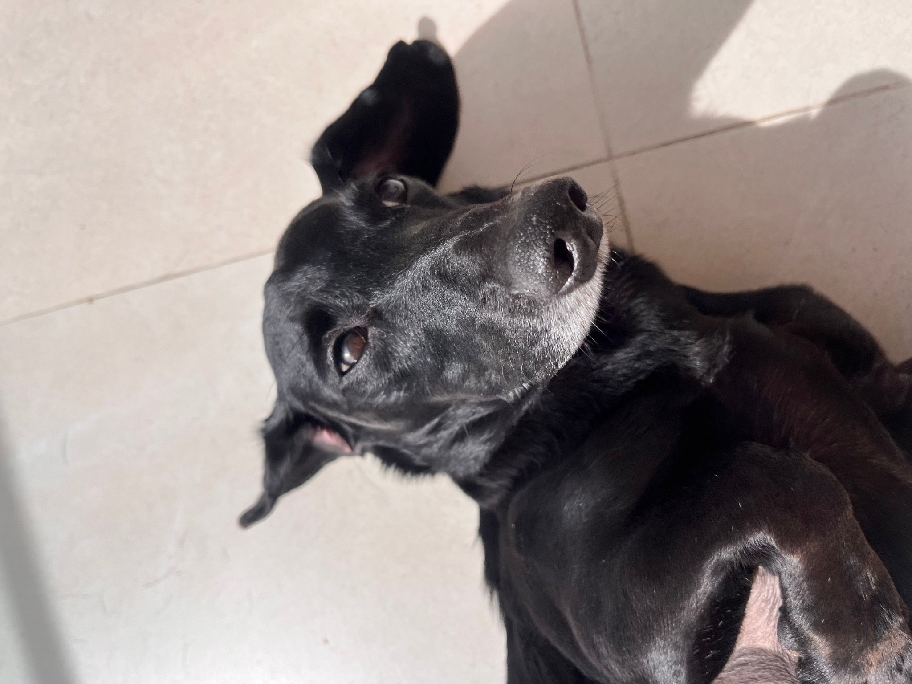
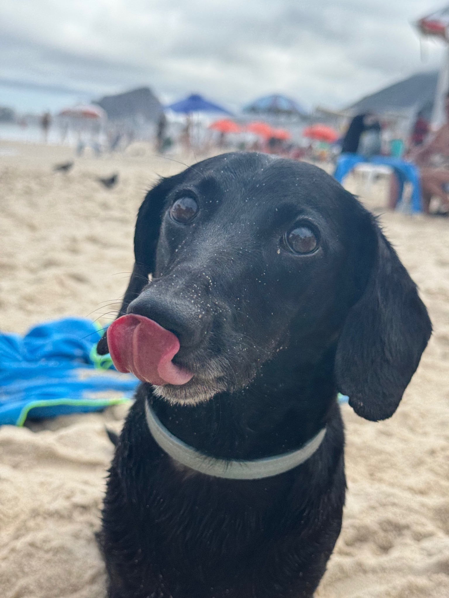
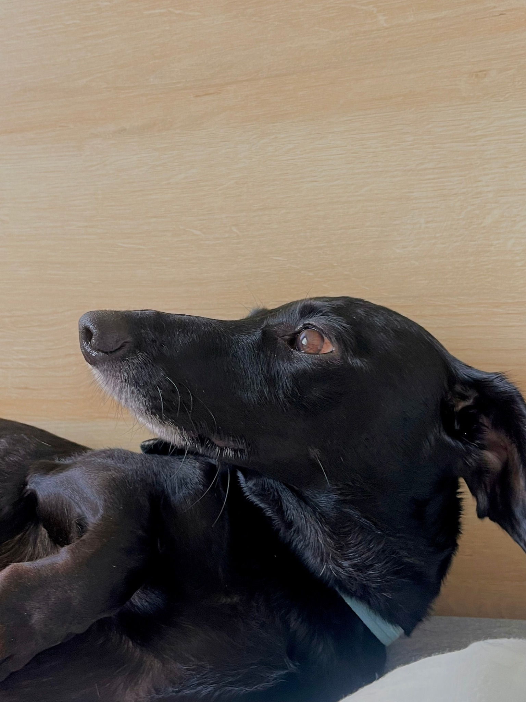

Luke
só as melhores fotos da lukezinho
O Luke é um cachorrinho muito fofo, com orelhas e fucinho longos, que adora praia e me faz sentir a pessoa mais importante do mundo.
O que eu mais gosto nele é que apesar de ser um velinho rabugento de 11 anos, ele continua com muita energia para me acompanhar em várias atividades ao ar livre


